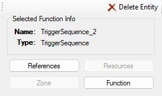
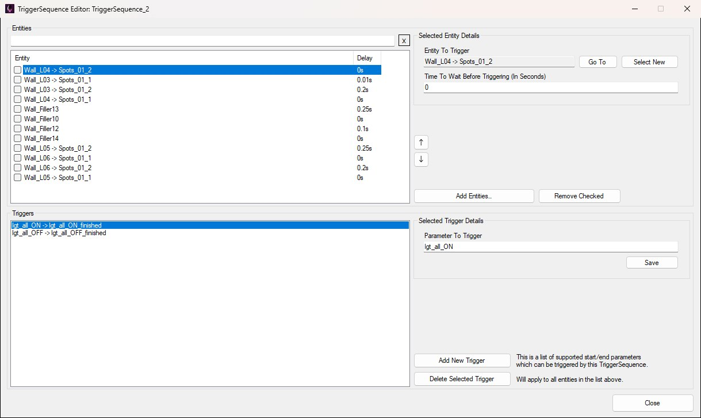
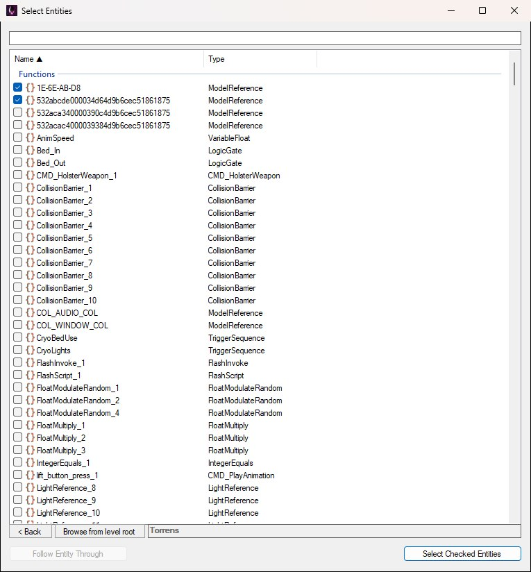
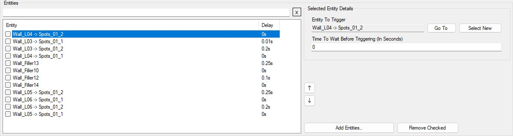
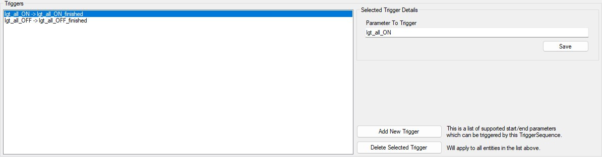

The TriggerSequence Editor configures a TriggerSequence function entity: an ordered list of other entities to fire, optional delays between them, and the start / finished method names that become pins on the flowgraph node.
Entity parameters such as trigger_mode, use_random_intervals, and interval_multiplier stay in the Entity Inspector. This editor only edits the sequence list and method entries stored on the entity.
TriggerSequence entity in the composite list or flowgraph.
The inspector with TriggerSequence_2 selected. Function is only enabled for entity types with a dedicated editor.
Edits apply directly to the selected entity while the window is open. The window closes if you reload commands, select a different entity, or switch composite.
The window is split horizontally, as in the screenshot below:
Drag the splitter between the panels to resize. Close is in the bottom-right corner. Here it is open on one of the Torrens lighting sequences, with a row and a trigger selected so that both details panels are showing — they stay hidden until you select something:

The editor on TriggerSequence_2 in BSP_Torrens: a run of wall-light entries with staggered delays above, the lgt_all_ON / lgt_all_OFF methods below.
The Entities list shows each sequence entry as a row: the resolved entity hierarchy path, and the delay in seconds. Checkboxes on the left are used for bulk removal. The search box above the list filters rows by entity path (click X to clear it); while a filter is active the up / down buttons and drag reordering are disabled, because a row’s neighbours in a filtered list aren’t its neighbours in the sequence.
Click Add Entities… to open the hierarchy picker with checkboxes. Check one or more function entities, then click Select Checked Entities. The picker starts in the current composite, with a search box above the list. Follow Entity Through (enabled only while a composite instance is highlighted) steps into that instance, and the composite you’re in — with the path you followed to get there — is shown along the bottom as a clickable breadcrumb, the same one the main editor uses: click any segment to jump back up to that composite, with the instance you came through selected so you can see which way you went, or click < Back to go up one level. Browse from level root restarts at the level’s root so an entry can point into a different branch of the level. All checked entities are inserted after the current selection (or at the end if nothing is selected). If nothing is checked, the highlighted row alone is added.

Add Entities… opens the shared entity picker in multi-select mode. Two rows are ticked here; Follow Entity Through is greyed out because no composite instance is highlighted.
You don’t have to open the editor to do this. Right-clicking a TriggerSequence on the flowgraph or in the entity list can add or remove the selected entities directly — see Adding Entities Without the Editor.
Selecting a row shows the details panel to the right of the list, as below:

trigger_mode and related parameters).The Triggers list is the set of start / end parameters this TriggerSequence exposes. Each line shows method -> method_finished; select one and its Selected Trigger Details panel appears beside the list:

These methods apply to all entities in the Entities list — when the sequence runs a method, every target is triggered with that method name (with its own delay).
For a parameter name X, the editor stores three related identifiers that appear as pins on the flowgraph node:
X — input method (start)X_relay — relay outputX_finished — finished outputAfter adding or renaming methods, refresh or reselect the node on the flowgraph if pin lists look stale. Standard methods like proxy_enable / proxy_disable remain on the entity type itself; the Triggers list is for the extra sequence methods you define here.
Click Close to leave the editor. Before closing, OpenCAGE checks that every sequence entry points at a real entity hierarchy. If any entry is empty or incomplete, you get an error and the window stays open so you can fix it.
There is no separate Save button — sequence and method edits are already on the entity. Persist them with the usual composite / level save. The whole session is recorded as a single undo step when the window closes (Edit → Undo lists it as “Edit trigger sequence of” the entity), so one Ctrl+Z afterwards puts both lists back as they were when the editor opened.
For the everyday job — putting the things you’ve just placed into a sequence, or taking them out again — you don’t need the editor at all. Select the entities, then right-click the TriggerSequence:
The menu then offers:
The same items appear on a proxy to a TriggerSequence, which carries a list of its own. If the editor is open on that sequence it’s closed first, and whatever it had changed is recorded as its own undo step before the addition goes on top. With the Viewport open, select the sequence afterwards to see what it now covers.
The third item, Auto-add New Entities To TriggerSequence, is a toggle. While it’s ticked, everything placeable you create joins the sequence as you make it — composite instances, and the kinds of entity the Viewport can place (models, lights, fog spheres and so on) — whether you add it from a Create menu, paste it, or place it in the Viewport. That includes entities made in a composite you step into from the sequence’s composite, not just the one it lives in, which is how a level’s zone sequences name geometry inside nested composites. Every addition is undoable, like a manual add.
While it’s on, right-clicking any entity in those composites also offers Add and Remove for that sequence by name, so you can correct a stray one without going back to the sequence’s node. Click the item again to stop. It also stops when you load another level or delete the sequence (or its composite), and it isn’t saved with the level.